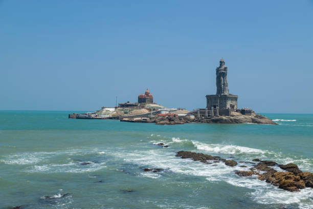

இந்தியாவின் தமிழ்நாடு மாநிலத்தில் அமைந்துள்ள கன்னியாகுமரி மாவட்டம், அகத்தீஸ்வரம் வட்டத்தில் இருக்கும்
ஒர் சிறப்பு நிலை பேரூராட்சி ஆகும். இப்பேரூராட்சியில் கன்னியாகுமரி தொடருந்து நிலையம் உள்ளது.
கன்னியாகுமரியில் தேவி கன்னியாகுமரி அம்மன் கோவில், விவேகானந்தர் நினைவு மண்டபம்,
திருவள்ளுவர் சிலை மற்றும் விவேகானந்த கேந்திரம் அமைந்துள்ளது. கன்னியாகுமரி கடற்கரையில் நாள்தோறும்,
அதிகாலையில் சூரியோதயம் மற்றும் மாலை நேரத்தில் சூரிய அஸ்தமனம் காட்சிகளை பார்க்கலாம்.